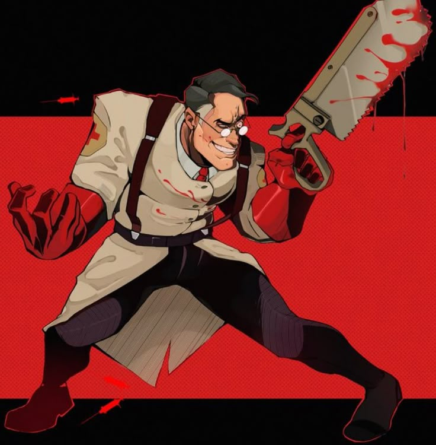

Origen: Stuttgart, Alemania
Salud: 150 HP
Velocidad: 107%
El Médico es un alemán con prácticas médicas cuestionables, originario de Stuttgart , Baden-Württemberg , Alemania . Al ser la única clase con una fuente de curación constante , suele encontrarse cerca del frente, brindando apoyo a sus compañeros. Si bien su Pistola de Jeringas y su Sierra de Huesos no son las mejores armas para el combate directo, normalmente se le puede encontrar cerca del frente, curando a los heridos mientras intenta mantenerse fuera del fuego enemigo. Cuando el Médico enfoca su Pistola Médica en un compañero cercano, este recuperará salud gradualmente ; los pacientes que ya tienen la salud al máximo verán incrementada su salud temporalmente hasta un 150 % de su capacidad base, lo que les permitirá luchar con mayor agresividad. Sin embargo, los compañeros que no han recibido daño recientemente se curan más rápido, lo que incentiva a otros jugadores a retirarse cuando resultan heridos.
